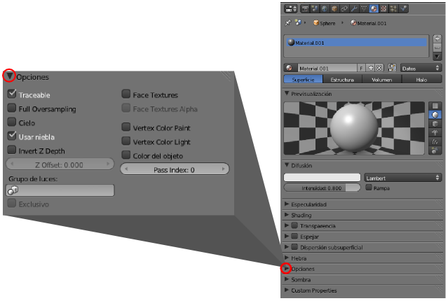

Materiales
El panel Material está lleno de posibilidades. Aquí es posible dar al objeto la apariencia deseada. Una vez asignado un color, decidimos otros asuntos como su capacidad de reflejar la luz, transparencia...
Lo mejor es hacer una breve introducción puesto que más adelante se le dedica el espacio necesario al tema de creación de materiales y texturas.
Excepto el cubo por defecto, cualquier otro objeto que sacamos a escena carece de material. La asignación de esta propiedad corre a cargo del usuario. Un botón llamado Nuevo es suficiente para que se despliegue todo el arsenal de posibilidades.
Esta es una buena oportunidad para hacer uso de los pequeños iconos triangulares de la esquina superior izquierda de cada botonera y que sirven para replegarlas y expandirlas. Si en esta ocasión nos quedáramos sólo con las que vamos a usar la apariencia sería esta otra.
Comencemos por ponerle un nombre al material. Accedamos al campo editable y asignémosle una denominación coherente con nuestro proyecto; un ejemplo podría ser carroceria (no usaremos tildes).
En la botonera llamada Difuso hacemos clic en el gran recuadro de color blanco (color por defecto que asigna Blender) para que nos aparezca un editor de colores de uso elemental para definir nuestro color.

Ayuda visual